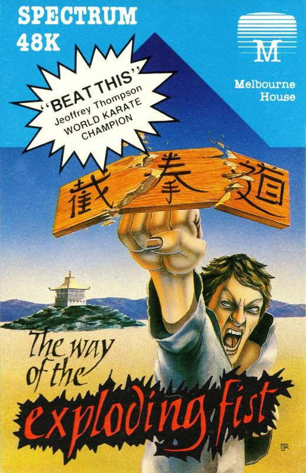
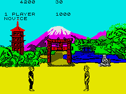
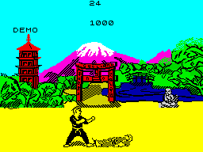

The Way of the Exploding Fist


{kind=link}

| Publisher: | Melbourne House |
| Price: | £8.95 |
| Year: | 1985 |
| Source: | CRASH, Issue 21 |

Melbourne House used to be well regarded just for their adventure games but the release of Starion changed that. Now we have come to expect good arcade games as well. Those good old ‘Cobbers’ from down under have caused quite a stir with their Karate simulation.
In The Way of the Exploding Fist you control a single character competing in a Karate match against either the computer or against anybody or anything else that can use a keyboard or joystick. Since Karate offers such a wide variety of moves the control system is necessarily complicated. The one player mode allows either the keyboard or the joystick to be used, but in the two player mode at least one player must use the keyboard.

The keys are definable but they are best set up as a square, three keys by three keys — that way, each key represents one of the eight directions obtainable on a joystick. A ninth key provides the joystick fire option, so shifting the eight keys allows a further eight functions, giving the sixteen options needed. With the keyboard set up in a similar way to the joystick it is best to regard each of the eight functions as directions on a compass, eg pushing the joystick diagonally right is the same as using the key on the top right hand of your key square in which case both the key and joystick direction can be referred to as north west or NW.
Whether you use the keyboard or a joystick, as you can imagine learning the controls will take a little time, but they have been laid out in a helpful way. For example all of the kicks are produced when the fire is held down: N gives a flying kick; NE a high kick; E a mid kick; SW short jab kick and S forward sweep which is a more of a flailing action performed with one leg from the crouch position. The backward kicks also rely on the fire button being pressed, but this time in conjunction with the north east and north west controls. Without fire, pushing N makes your character jump, thus avoiding sweeps or low jab kicks. NE produces a high punch, E moves the character forward, SW gives a punch to the belly, S is a crouch and low punch, SW a back somersault, W backwards walk and defensive block and NW makes your man perform an elegant forward somersault.

Learning how to produce the various moves is only part of the story: appreciating when each of the available moves is best used is just as vital. The literature enclosed with the game goes some way to pointing out the pros and cons of each of the moves but a great deal can only be learnt by experience. It’s best to start by mastering some of the easier moves which will be quite effective against the low order opponents. For example the short jab kick is quick and effective at close range, as only the higher level Dans will be able to defend against it with ease. One of the better moves is the forward sweep, which can be both offensive and defensive — if the enemy is within range it is very difficult to avoid. The misnamed roundhouse kick allows you to turn about and deliver a vicious mid level kick, but it takes some time to perform so you could be exposed to attack before your blow is delivered.
The somersaults are useful for escaping from the reach of your opponent but, when using the backwards somersault, make sure you know how to turn around otherwise you are going to have your back to your enemy while you are fiddling with the controls. The other defensive moves also require some appreciation. There are two types of defensive blocks: a high and a low block. It would be as well to remember that while you may be able to fend off one aggressive move with one type of block your opponent could change to a move which circumnavigates the block you are holding. Clearly the solution is to change blocks, but that requires absolute knowledge of the controls and the effect of various moves so that you can pre-empt your opponent’s attacks. Because there is no block against low sweeps it’s worth mastering those two moves at an early stage.
Your sole aim when battling against the computer is to reach the exalted rank of 10th Dan. In all, there are eleven levels. Your first fight will be against the Novice — a much battered individual — and you should be able to deal with him with just a little mastery of the basic moves. If you impress the judge (he’s the little bald headed bloke with the Mexican moustache) you will be awarded half a point in the form of a yin or yang symbol. A full point (a yin-yang) is only awarded for moves which the judge considers to have been executed very well, so a poorly executed but punishing body blow may only be awarded half a point.
The symbolic points relate to our performance in any one bout; to defeat an opponent you must win both bouts, even if only by half a point. In order to progress through the levels you must defeat each Dan in two bouts, and if the computer gets the better of you in a bout then it’s back to bashing the Novice. If a bout ends with a draw then you will get the chance to fight that bout again.
Points for the match as a whole are displayed at the top of the screen. These match points are awarded according to the type of move you use. For instance, a straight punch is worth less than the more difficult ‘roundhouse kick’. If a move is performed well and is rewarded with a full point, then the match point value of that move is doubled. Fighting against the computer is very good practice for combat against another person because, as you move up from one level to another, you can take comfort in the knowledge that your next opponent is going to be meaner and cleverer than the last. As an added stimulation to training, remember your opponent has only to win one bout and you go back to the start again.
Competition against a fellow human can be more challenging but this time the match is decided in favour of the contestant with the highest score after four bouts. If, during a bout, the time limit is reached and the yin-yang points are even then the judge will order that bout to be fought again until there is a clear winner.
CRITICISM
“It’s here at last! It has certainly been worth the wait. This is by far and away the best sports combat simulation available yet. Complete with oriental scenic backdrops, the game flows into Karate mania. With its fab, even dynamic graphics, the kicks and punches seem to have a strength and purpose. I enjoyed The Way of the Exploding Fist — having mastered the simple straight kick and punch I quickly began to delight in the more complicated moves, back and spinning kicks integrated with the odd somersault. The wide variety of moves means that you are never limited in your means of attack and counter attack. Addictive is the word.”
“On the Spectrum there have been few good representations of the noble martial arts. Kung Fu by Bug Byte was probably the best, but it had so few moves and was painfully slow. Melbourne House’s Way of the Exploding Fist puts that to rights. It has a stunning 18 moves that can be performed with astonishing speed and accuracy, just like the real thing. It can take quite some time to get used to all the available moves, and I found the two player mode best for practice before tackling the computer. Once the moves have been mastered the game starts to really open up and become fun. I was pleasantly surprised by the quality of the Spectrum version; the two central characters are perfectly animated against scenic backdrops which provide pleasant surroundings to have a good fight in! The sound is very limited but it does enhance the game — not quite the screams of the CBM64 original but politer squeals of pain. Exploding Fist is immense fun to play and it really comes into its own on a two player game especially when you are evenly matched. I’m not sure how long it will keep you addicted for, but it certainly kept me up late. Though the weather hasn’t been very sporty the recent releases of sports simulations have more than made up for it!”
“Exploding Fist, now that it has finally appeared on the Spectrum, is the best game in the genre to appear yet. Though not as colourful as its Commodore and Amstrad cousins, the speed and gameplay is nearly identical. In fact the monochromatic figures are just as effective in their own way as the Commodore’s blocky sprites. Differences that I noticed included the computer opponent’s increased viciousness, which makes the game lot more challenging and playable. Getting the fight actions you need can be a fumble at first, but after a bit of practice things get a lot clearer. The sound effects, though sparse, are effective: there’s nice thud when a fighter hits the floor and a nasty crack noise when someone gets hit. I particularly enjoyed the two player option which has to make, Way of the Exploding Fist one of the best two player games around. It’s definitely the best beat ’em up yet on the Spectrum and is good value for money.”
COMMENTS
| Control keys: | Definable |
| Joystick: | Sinclair and Kempston |
| Keyboard play: | Very good |
| Use of colour: | Excellent backdrops |
| Graphics: | Very smooth animation |
| Sound: | Good bashing sounds |
| Skill levels: | 11 |
| Screens: | 4 backdrops |
| General rating: | Excellent |
| Use of computer: | 87% |
| Graphics: | 92% |
| Playability: | 87% |
| Getting started: | 80% |
| Addictive qualities: | 96% |
| Value for money: | 85% |
| Overall: | 92% |